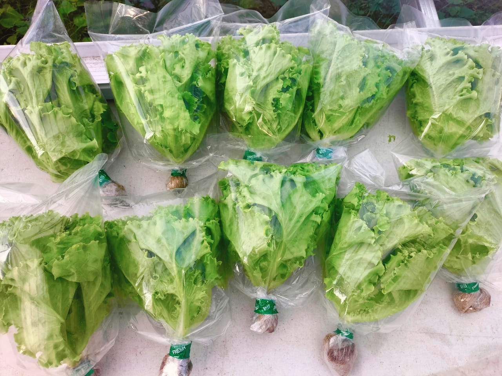
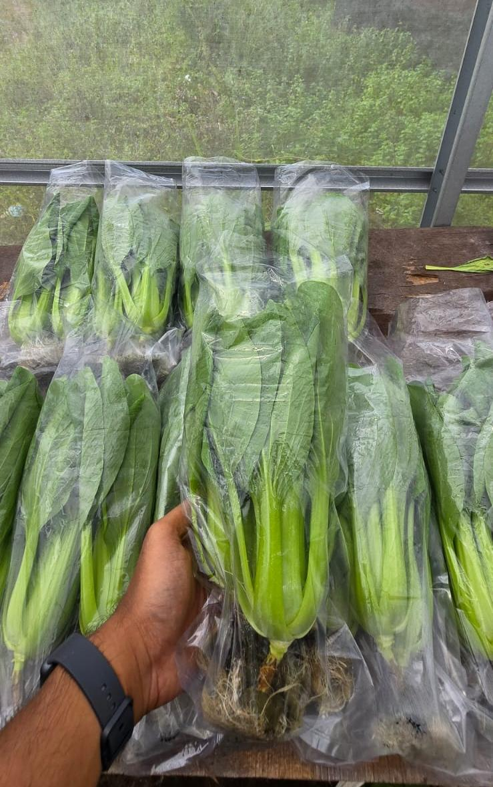
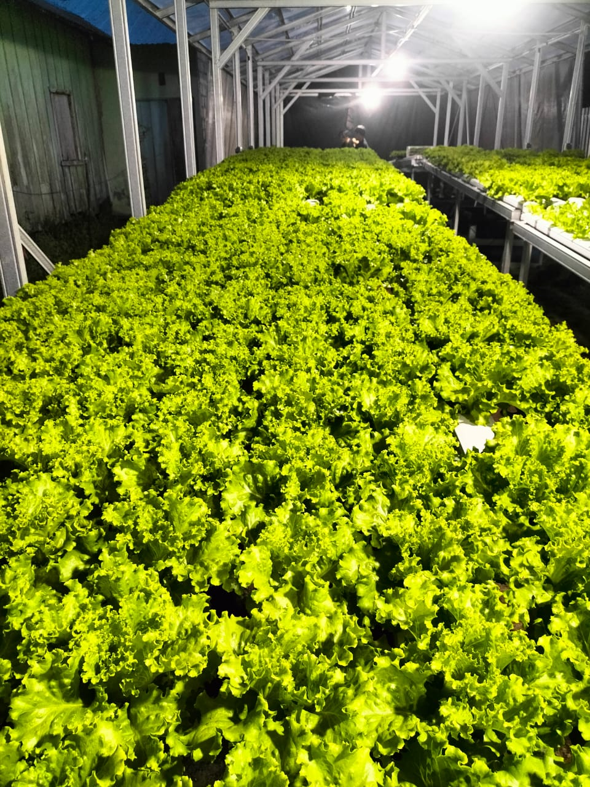
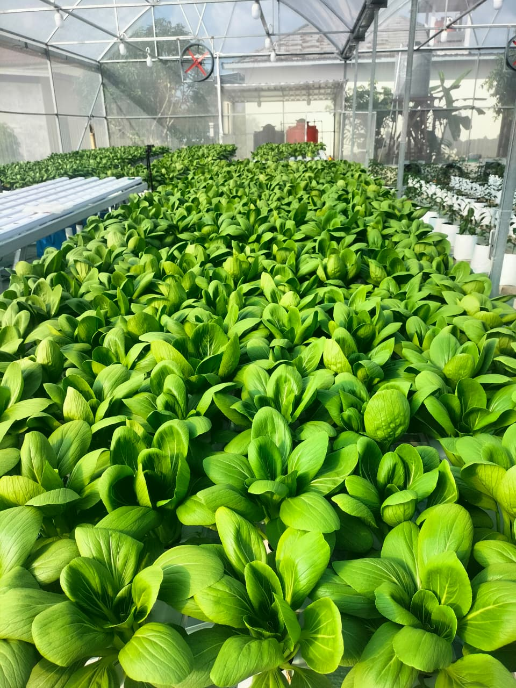
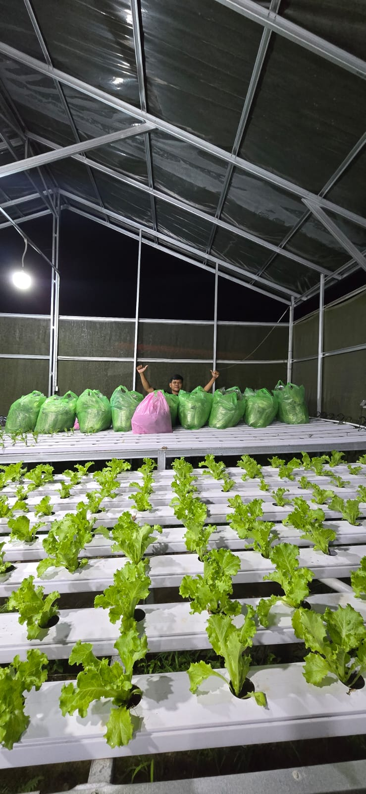
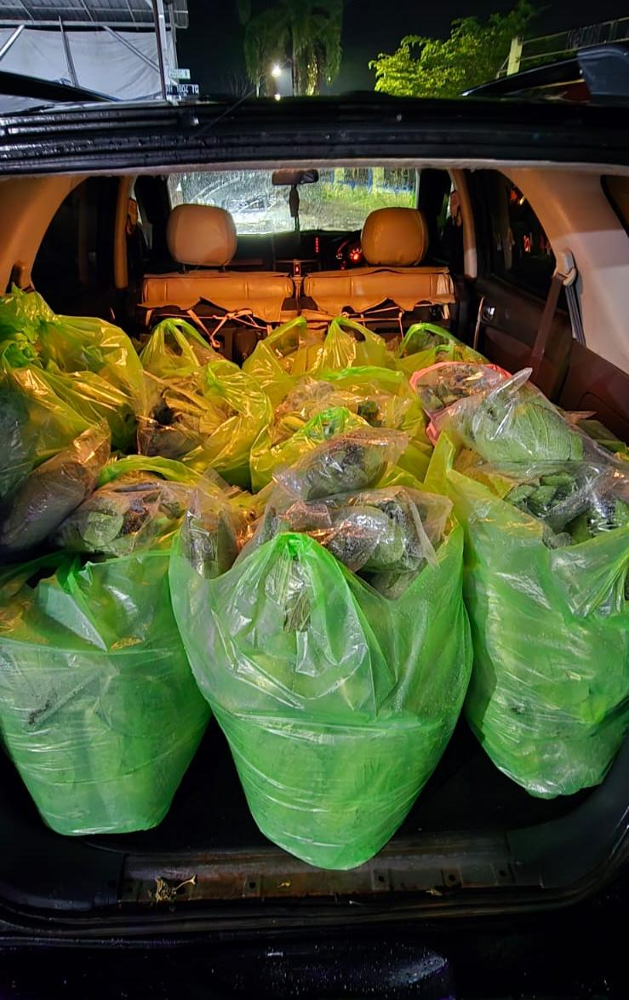

Galeri Kebun Azkiya
Melihat lebih dekat proses budidaya hidroponik kami yang higienis, bebas pestisida, dan penuh kasih sayang untuk menghasilkan sayuran kualitas premium.






© 2026 Azkiya Farm Palangka Raya.